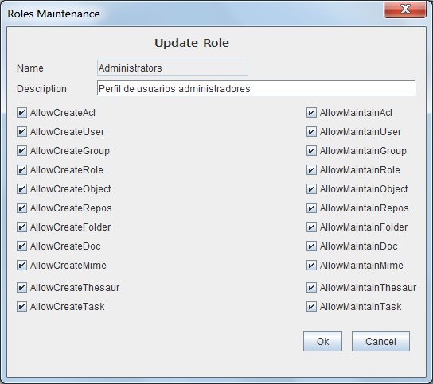

Mantenimiento Roles
Al seleccionar en el formulario de Lista Roles las opciones de Alta, Baja, Modificación o Copia de Roles aparecerá este formulario con diversos campos activados o desactivados.
Este formulario contiene la información:
- Nombre identificativo:Identificador del Rol cuyo valor no puede repetirse ni cambiar una vez asignado. Puede tener una longitud máxima de 32 caracteres. (Ej. "Admin.Tipos Documentales", "Resp. Seguridad")
- Descripción del Rol: Descripción que permita interpretar el Rol. Puede tener una longitud máxima de 128 caracteres. (Ej.: "Documentalistas responsables administración Tipologías documentales", "Responsables de Seguridad encargados de mantenimiento de usuarios y Grupos")
- AllowCreateUser: Permite crear un usuario pero no modificar los existentes
- AllowMaintainUser: Permite modificar y borrar los usuarios
- AllowCreateGroup: Permite crear un grupo pero no modificar los existentes
- AllowMaintainGroup: Permite modificar y borrar los grupos
- AllowCreateAcl: Permite crear un ACL pero no modificar los existentes
- AllowMaintainAcl: Permite modificar y borrar los ACL
- AllowCreateRole: Permite crear un rol pero no modificar los existentes
- AllowMaintainRole: Permite modificar y borrar los roles
- AllowCreateObject: Permite crear una definición de objeto usuario pero no modificar los existentes
- AllowMaintainObject: Permite modificar y borrar las definiciones de objetos
- AllowCreateRepos: Permite crear un repositorio pero no modificar los existentes
- AllowMaintainRepos: Permite modificar y borrar los repositorios
- AllowCreateFolder: Permite crear una carpeta pero no modificar los existentes
- AllowMaintainFolder: Permite modificar y borrar las carpetas
- AllowCreateDoc: Permite crear un documento pero no modificar los existentes
- AllowMaintainDoc: Permite modificar y borrar los documentos
- AllowCreateMime: Permite crear un tipo mime pero no modificar los existentes
- AllowMaintainMime: Permite modificar y borrar los tipos mime
- AllowCreateAuth: Permite crear un sistema de autenticación pero no modificar los existentes
- AllowMaintainAuth: Permite modificar y borrar los sistemas de autenticación
- AllowCreateCustom: Permite crear una personalización usuario pero no modificar los existentes
- AllowMaintainCustom: Permite modificar y borrar las personalizaciones

Ver: Lista Roles
Índice Ayuda OpenProdoc